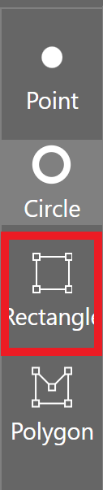

üî¨ Lab10: CV#
üìå Objectives#
Students should be able to explain the concept of Histogram of Oriented Gradients (HOG) and its role in object detection.
Students should be able to train a custom object detector using Dlib and analyze its performance.
Students should be able to implement and test a trained object detector on new images.
Students should be able to create a ROS 2 package for computer vision tasks and integrate OpenCV for image processing.
üìú Overview#
In this lab, we explore how the Histogram of Oriented Gradients (HOG) features, combined with a Support Vector Machine (SVM), enable object detection. By now, we’re all familiar with histograms, but in this context, they help simplify an image so a computer can quickly and accurately identify objects within it.
Rather than analyzing the gradient direction of every single pixel, HOG groups pixels into small cells. Within each cell, the gradient directions are computed and categorized into orientation bins, with stronger gradients carrying more weight. This approach helps reduce the influence of random noise and provides a structured representation of the image. HOG features maintain the distinct shape of an object while allowing for slight variations. For instance, consider an object detector designed to recognize a car:

Comparing each individual pixel of this training image with another test image would not only be time consuming, but it would also be highly subject to noise. As previously mentioned, the HOG feature will consider a block of pixels. The size of this block is variable and will naturally impact both accuracy and speed of execution for the algorithm. Once the block size is determined, the gradient for each pixel within the block is computed. Once the gradients are computed for a block, the entire cell can then be represented by this histogram. Not only does this reduce the amount of data to compare with a test image, but it also reduces the impacts of noise in the image and measurements.

Now that we understand HOG features, let’s leverage OpenCV and Dlib to build a stop sign detector. First, we need to download a repository containing pre-made test and training data. Keep in mind that we won’t evaluate the algorithm’s effectiveness using the training data—it’s expected to perform well there. Instead, our goal is to use a diverse test set to develop a detector robust enough to recognize stop signs in new images.
üå± Pre-Lab: ROS2 Client Libraries#
Create a package named
lab10_cvwith theBSD-3-Clauselicense and dependencies:rclpycv_bridgesensor_msgsstd_msgsopencv2
Hint: There’s a way to include all dependencies at the time of package creation.
Download the
lab10_prelab.tar.xz. Extract the files and move them to~/master_ws/src/ece387_ws/lab10_cv/test.Open the Jupyter Notebook file,
lab10_prelab.ipynbwith vscode.Click
Select Kernelin the top right corner, choosePython Environments, and select/usr/bin/python3.As you read through the notebook, run the python code by clicking the arrow button in the top left corner.
If the following message pops up, choose
Install
Take a screenshot of the gradient image and submit it on Gradescope.
üß™ Lab Instructions: Object Detection Using HOG and ROS#
In this lab, you’ll build a stop sign detector using HOG (Histogram of Oriented Gradients) features, test it, and integrate it with a ROS-based camera system.
1. Build a Detector Using HOG Features#
Open a terminal and download the demo repository:
cd ~/master_ws/src git clone git@github.com:ECE495/HOG_Demo.git cd HOG_Demo
Inside the repo, you’ll find folders for training and test images. We’ll use a tool called
imglabto annotate the training images.Go to imglab in your browser.
When prompted, click “UMM, MAYBE NEXT TIME!” to skip the sign-in.
In the bottom left corner, click
load, select thetrainingfolder from your local files, and then clickupload. This should load 19 images.Select the Rectangle tool and begin labeling stop signs:

Click and drag to draw a bounding box only around each stop sign.
If an image contains multiple stop signs, draw a box around each.
If you make a mistake, select the box and press
delete.
Note
It is important to label all examples of objects in an image; otherwise, Dlib will implicitly assume that regions not labeled are regions that should not be detected (i.e., hard-negative mining applied during extraction time).
Tip
Use
Alt + ←/→to switch between images.Once you’ve labeled all images, press
Ctrl + eto export your annotations.Save the file as
stop_annotations.xmlin thetrainingfolder.

Create a Python script:
cd ~/master_ws/src/HOG_Demo touch trainDetector.py
Open it in your preferred code editor and paste in the following code:
# Import required libraries import argparse # For parsing command-line arguments import dlib # For training and testing the object detector # Set up command-line arguments ap = argparse.ArgumentParser() ap.add_argument("-x", "--xml", required=True, help="Path to input XML file") # Path to the labeled training dataset in XML format ap.add_argument("-d", "--detector", required=True, help="Path to output detector (.svm)") # Path where the trained .svm model will be saved args = vars(ap.parse_args()) # Parse the arguments into a dictionary # Inform the user that training is starting print("[INFO] Training detector...") # Set training options for the object detector options = dlib.simple_object_detector_training_options() options.C = 1.0 # Regularization parameter; higher values = lower bias, higher variance options.num_threads = 4 # Number of CPU threads to use for training options.be_verbose = True # Print progress and training status to the console # Train the detector using the specified XML file and save the model dlib.train_simple_object_detector(args["xml"], args["detector"], options) # After training, test the detector on the training dataset to evaluate performance print("[INFO] Training accuracy: {}".format( dlib.test_simple_object_detector(args["xml"], args["detector"]))) # Load the trained detector from disk detector = dlib.simple_object_detector(args["detector"]) # Create a window to visualize the learned detector's HOG features win = dlib.image_window() win.set_image(detector) # Show the detector as a HOG filter visualization # Wait for the user to hit Enter before closing dlib.hit_enter_to_continue()
Run the script to train your detector:
python3 trainDetector.py --xml training/stop_annotations.xml --detector training/stop_detector.svm
You may get a few errors pop up during execution based on your choice for bounding boxes. Make sure you address those errors before continuing. If everything runs correctly, you’ll see a visualization of the trained HOG filter. If you get an error, double-check your annotations and fix any issues.
{kind=link}
{kind=link}
2. Test the Detector#
Now it is time to build our code to test the detector.
Create a new Python script:
cd ~/master_ws/src/HOG_Demo touch testDetector.py
Add the following code:
# Import the necessary packages from imutils import paths # Utility to easily grab file paths from a directory import argparse # Used to handle command-line arguments import dlib # Library for machine learning tools including object detection import cv2 # OpenCV for image processing # Set up command-line arguments ap = argparse.ArgumentParser() ap.add_argument("-d", "--detector", required=True, help="Path to trained detector (.svm)") ap.add_argument("-t", "--testing", required=True, help="Path to testing images folder") args = vars(ap.parse_args()) # Parse the arguments into a dictionary # Load the trained detector using the path provided # The .svm file contains the learned HOG + SVM model detector = dlib.simple_object_detector(args["detector"]) # Loop through each image file in the testing directory for imagePath in paths.list_images(args["testing"]): # Read the image from disk using OpenCV image = cv2.imread(imagePath) # Convert the image from BGR (OpenCV default) to RGB (required by dlib) # Then, pass it to the detector which returns a list of bounding boxes boxes = detector(cv2.cvtColor(image, cv2.COLOR_BGR2RGB)) # Loop through each bounding box returned by the detector for b in boxes: # Get the coordinates of the bounding box (x, y, w, h) = (b.left(), b.top(), b.right(), b.bottom()) # Draw the bounding box on the image using a green rectangle # (x, y) is the top-left, (w, h) is the bottom-right corner cv2.rectangle(image, (x, y), (w, h), (0, 255, 0), 2) # Display the image with the detections in a pop-up window cv2.imshow("Detection", image) # Wait for a key press before moving to the next image # (0 means wait indefinitely until a key is pressed) cv2.waitKey(0)
Run your test:
python3 testDetector.py --detector training/stop_detector.svm --testing test
Look at your results. Did the detector work well? Were there any false positives or missed signs?
3. ROS: Live Camera Streaming#
ROS includes several tools for working with commercial off-the-shelf cameras, like the USB camera on your robot. The main one we’ll use is the usb_cam package, which is already installed. We’ll now use ROS 2 and usb_cam to stream live video from the camera.
SSH into your robot and run:
ros2 run usb_cam usb_cam_node_exe --ros-args -p video_device:=/dev/video0
Ignore any calibration error messages — we’ll handle that later.
On your Master PC, Run:
ros2 topic list
You should see topics like
/image_raw,/camera_info, etc.Check topic bandwidth:
ros2 topic bw /image_raw ros2 topic bw /image_raw/compressed
Check image publishing rate:
ros2 topic hz /image_raw ros2 topic bw /image_raw/compressed
View the camera feed:
ros2 run rqt_image_view rqt_image_view
Select
/image_rawto see the feed. Try waving your hand in front of the camera to check latency.You may have noticed that streaming images over WiFi is quite slow. While using compressed images can help, it also increases the processing load on both the Raspberry Pi and the master computer. To avoid this during development, we’ll run camera-related code directly on the master computer. Once everything is working, we can move the code back to the robot.
Disconnect the camera from the robot and plug it into the master computer. You can also unplug the gamepad—it’s not needed for now.
On the master computer, run the following command to start the camera node:
ros2 run usb_cam usb_cam_node_exe --ros-args -p video_device:=/dev/video0
Check topic bandwidth and image publishing rate:
ros2 topic bw /image_raw ros2 topic hz /image_raw
To verify the image stream, launch the image viewer:
ros2 run rqt_image_view rqt_image_view
4. Capture Training Images with ROS#
You’ll now use a script to save training images of stop signs from your live feed.
Download the
image_capture.pyscript and place it in your package’s script folder.Update your
setup.pyto include the script as an entry point. This is necessary to ensure that the script runs as a node.Open the
image_capture.pyscript and read through the code carefully. It may be unfamiliar, but take your time to understand what each part is doing.Rebuild your package:
ccbuild --packages-selelct labl0-cv
Run the USB camera node on Master:
ros2 run usb_cam usb_cam_node_exe --ros-args -p video_device:=/dev/video0
Open a new terminal, navigate to the
Documentsdirectory, and runros2 run lab10_cv image_capture -o ./training_images/
Press
sandEnterto save an image. Take multiple images from different angles and distances. PressCtrl + Cwhen done.Use
imglabagain to annotate your new images and save the XML file as before. Then re-train your detector using the updated dataset.
5. Use the Detector in a ROS Node#
In this step, you’ll create a ROS 2 node that runs your stop sign detector in real-time using the live camera feed.
Download the
stop_detector.pyscript and place it in your package’s script folder.Update your
setup.pyto include the script as an entry point.Edit
stop_detector.py.Inside the
camera_callback()function, use the same image processing approach used in theimage_capture.pyscript to convert ROS image messages into OpenCV format (cv_image).Apply your HOG-based detector to the
cv_image, just like you did in Test the Detector.Draw bounding boxes around any detected stop signs.
Use
cv2.imshow()to display the video, and make sure to callcv2.waitKey(1)to allow the video to refresh in real-time.
Use the following command, replacing
<path/to/detector>with the path to your trained.svmdetector file:ros2 run lab10_cv stop_detector -d <path/to/detector>
You should now see a window displaying the camera feed with stop signs outlined.
Install
OBS Studioto record your stop sign detection in action.sudo apt update sudo apt install obs-studio qtwayland5
Run
obsfrom the terminal, or find it underApplications.Set up recording:
In the Scenes panel (bottom-left), click the
+and name your scene (e.g., “Stop Sign Detection”).In the Sources panel, click the
+and choose Window Capture.Select the window showing your detector output.
Click Start Recording.
Move around while keeping the stop sign visible to showcase detection capabilities. Present the stop sign from different angles, including varied pan, tilt, and rotation positions, as demonstrated in the video below.
When finished, click Stop Recording.
Upload your recording to the class Teams channel.
üöö Deliverables#
[20 Points] Complete the
stop_detector.pyScriptEnsure the script is fully functional and implements all required features.
Push your code to GitHub and confirm that it has been successfully uploaded. NOTE: If the instructor can’t find your code in your repository, you will receive a grade of 0 for the coding part.
[10 Points] Submit Screenshots
Submit the screenshot of the gradient image.
[20 Points] Demonstration
Show the
stop_detectornode successfully detect the stop sign.